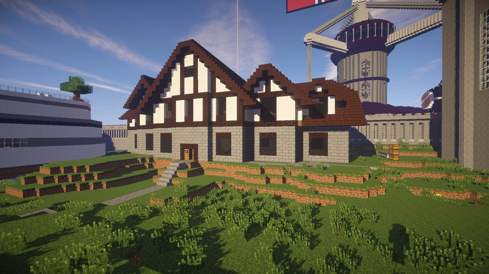
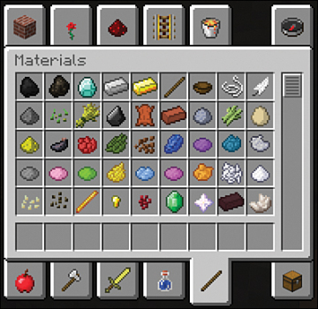
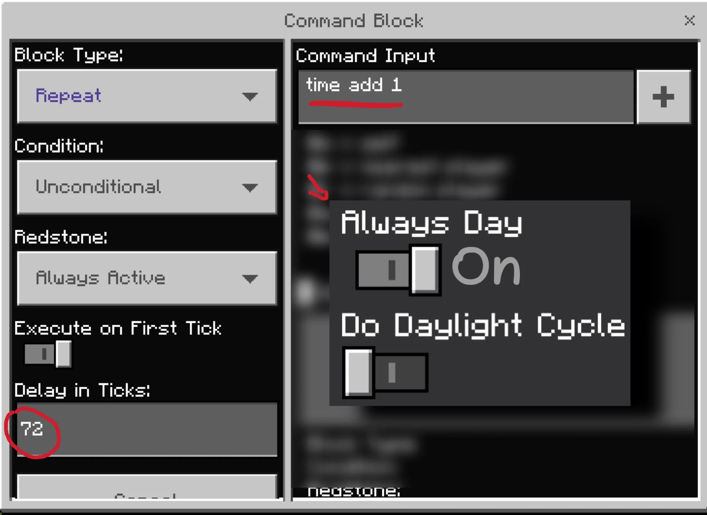
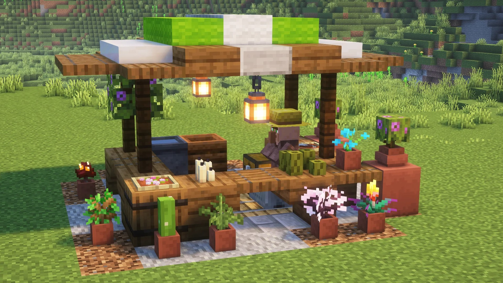
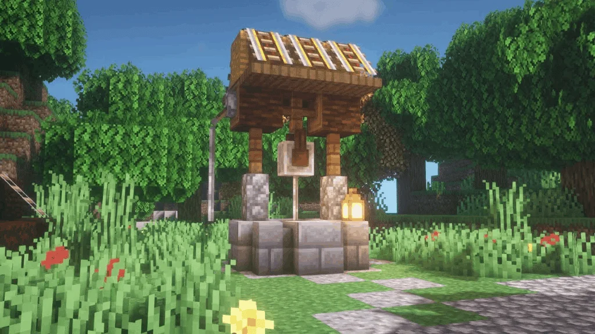

Minecraft: Creative Mode
Introduction
Creative Mode in Minecraft is designed for players who wish to immerse themselves in an unrestricted building experience. It offers a canvas without limits, allowing players to explore their creativity and construct elaborate structures without the constraints of survival gameplay.
Features
In Creative Mode, players enjoy an infinite supply of all available blocks and items, making it easy to build anything from majestic castles to sprawling cities. The ability to fly is another key feature, providing a bird's-eye view and ease of access to high or hard-to-reach areas. This freedom means that players are not burdened by health or hunger, allowing them to focus entirely on their creative projects.
Players benefit from instant block placement and destruction, which accelerates the building process and simplifies experimentation with different designs. The inventory is fully stocked with every block and item in the game, giving players unrestricted access to all resources and tools.
Customization
Creative Mode also offers customizable game rules, allowing players to adjust settings such as mob spawning and the day-night cycle. This level of control enhances the building experience by letting players tailor the game environment to their specific needs and preferences.
Getting Started
To enter Creative Mode, players can use the command /game mode creative in the game’s chat or select Creative Mode from the game settings when creating a new world. This mode is perfect for those who want to focus solely on building and creativity without the typical constraints of Minecraft's Survival Mode.
Conclusion
Creative Mode in Minecraft provides a unique platform for players to bring their most imaginative ideas to life. With its unlimited resources, flight capability, and flexible game rules, it is the ideal mode for experimenting, designing, and crafting to your heart's content.
